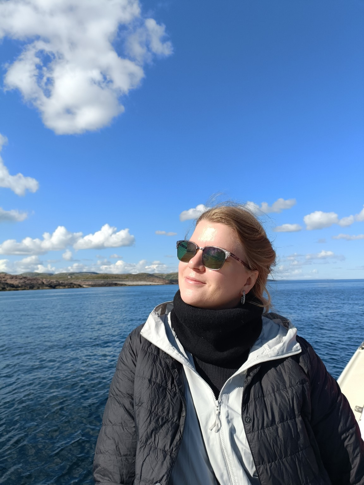

Исчезновение концертного билета
В архиве обнаружена запись о ценном документе, предназначенном для Ксении Пятибратовой. Чтобы получить доступ к нему, агенту «Пятка» предстоит пройти пять проверок.
цыпы

Где состоялось знакомство именинницы с поздравителями?
В архиве зафиксирована первая встреча Ксении Пятибратовой и её будущей сообщницы Ксюши. Отметьте все подходящие места.
«Подозреваемые пересеклись в 2000-х годах. Позже выяснилось, что их история связана сразу с двумя корпусами одного большого дела».
Установите путь подозреваемой
В архиве обнаружено несколько версий жизненного маршрута. Только одна выглядит правдоподобно и при этом достаточно кинематографично.
Кем Пятка приходится вашей семье?
Семейный протокол содержит шесть показаний. Только одно из них составлено без искажений, домыслов и чужих биографий.
Расшифруйте номер экспедиции
На обложке журнала обнаружена надпись: «Тур для дур №…». Какой номер нужно внести в официальный реестр?
Куда привела эта экспедиция?
Опознайте подозреваемую по гастрономическому досье
В архиве обнаружены странные, но убедительные сведения:
хлебобулочные изделия вызывают особый интерес; болгарский перец категорически исключён; свёкла недавно частично реабилитирована; персики признаны слишком волосатыми; нектарины проходят экспертизу без замечаний; листики базилика из блюда удаляются; из борща обычно изымается только бульон.
Дело раскрыто. Объект найден: «Космонавт».
Агент Пятка, вам предписывается явиться на танцпол 1 ноября 2026 года в 20:00. Внутри хранилища находится документ, который нельзя было доверить обычной почте.
«Марсель»
С днём рождения, Ксюша! Пусть в следующей главе вашей общей истории будет ещё больше путешествий, случайных маршрутов, Японии, хороших экскурсий и поводов танцевать.
С любовью, Ксюша, Ваня, Лев и Михаил
Документ выдан семейным архивом. Копированию не подлежит — кроме случаев, когда очень хочется сохранить этот квест.